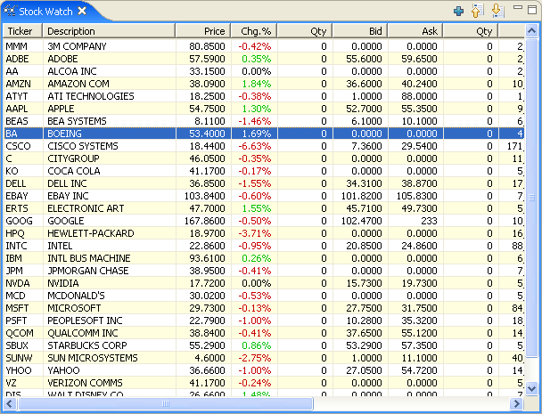
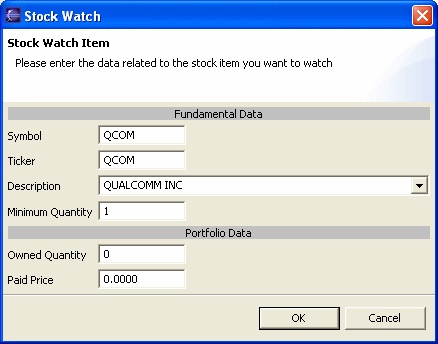
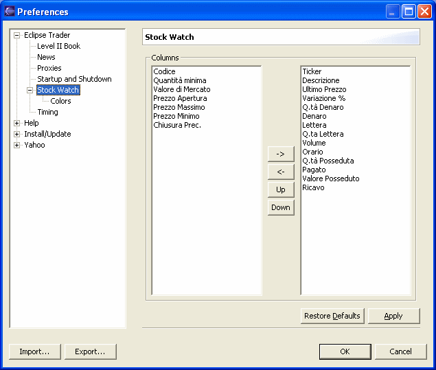

The Stock Watch window is shown by selecting Show Stock Watch from the Window menu.

The window allows to keep track of the price trend of the selected symbols.
The window's toolbar allows to add a symbol to the list e to move the symbol towards the high or the bottom. The list is not automatically ordered but keeps the order with which the symbols were added, with the possibility to vary the position with the toolbar.
Right-click on the window to open the menu that allows to modify the symbols list and open the windows related to the historical charts, intraday charts and level II / market depth data for the selected symbol.
Selecting the Add or Modify items it will be possible to insert a new symbol or modify the selected one.

Symbol
This is the symbol used to retrive the data from the sources. For the Italian
market this is the ISIN code.
Ticker
Alphabetic code assigned to the symbol. Usually it is the same as the Symbol
field. For the Italian market this is the alphabetic code assigned by Borsa
Italiana.
Note: if your stock market uses different symbols and alphabetic codes, it is possible that some sources are using the symbol and other are using the ticker to retrive the data, so it is advisable to fill both fields with the proper codes, Eclipse Trader's plugins will use the proper field automatically.
Description
Company's name or short description of the symbol. From the pull down list it is
possible to select one of the items present in the Eclipse Trader's list. The
selection will overwrite any data already present in the Symbol, Ticker and Minimum
Quantity fields.
Minimum Quantity
Minimum trade quantity. This value will be used by trading plugins to set the
trade quantity for buys and sells.
Owned Quantity
Paid Price
Total quantity and average paid price for owned shares. If used, the Stock Watch
window will calculate the gains and losses related to the owned shares (see the
columns Owned Q.ty, Paid Price, Owned Val. and Gain).
The Stock Watch preferences page allows to completely customize the viewing mode. To open the preferences select the Preferences item from the Window menu, the select Stock Watch.

In the left column are listed the elements that is possible to show in the Stock Watch window. In the right column are listed the elements that are currenlty shown in the Stock Watch window and the display order.
Using the buttons in the middle it is possible to add or remove elements from the view and modify the order in which they are shown in the Stock Watch table.
The Colors subpage allows to set the colors used by the Stock Watch window.